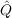
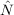

The variance-mean plots the two moments of the data sets with variance-errors overlayed as error bars. A quadratic fit is also shown. Coefficients for the quadratic fit is used for multiple-probability fluctuation analysis (MPFA) to estimate the quantal size () and number of release sites (). The estimates are shown to the side of the figure alongside the baseline standard deviation (ϵ) used to fix the intercept. Note these estimates in no way correct for quantal variances. If the estimate for the number release sites is negative, then your data is not suitable for MPFA. If you wish to perform Bayesian quantal analysis, click on the button labelled ‘Run quantal analysis’. If you wish to view the amplitude histograms for the different conditions, click ‘Histograms’.